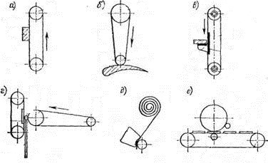

В зависимости от технологических параметров ленты могут работать в различных режимах. Могут создаваться разные условия для использования режущих свойств их основного элемента — зерна. Зерна могут работать в условиях жесткого закрепления (абразивная лента) или в режиме податливости и самоориентации (лента с нанесенной пастой). Они могут не только одинаково самоустанавливаться, но и нивелировать по высоте и равномерно распределять между собой давление.
Абразивные ленты используют для полирования различных материалов с применением СОЖ, а также всухую. Их режущие свойства и стойкость определяются комплексом свойств основы и связки, а также, маркой и зернистостью абразивного материала, способом его нанесения, и другими физико-механическими свойствами.
В зависимости, от требований к шероховатости и форме обрабатываемых поверхностей полирование лентами выполняют по нескольким принципиальным схемам.

1. Обработка свободной лентой (а).
Применяют для полирования криволинейных поверхностей деталей и профильных отверстий.
2. Контактное полирование (6).
Это наиболее распространенный вид ленточного полирования. Применяемые станки отличаются
простотой конструкции и универсальностью.
3. Обработка с опорной планкой (в).
4. Бесцентровое полирование цилиндрических деталей (г).
Обрабатываемая деталь, находящаяся между двумя лентами, опирается на нож.
5. Полирование рулонной лентой (д).
Широко применяется в подшипниковой промышленности.
6. Барабанно-ленточное полирование (е)
Скорость движения ленты в большинстве случаев составляет от 10 до 40 м/с. Наибольший съем металла происходит при скорости лент на клеевой связке от 17,6 до 27 м/с, а на полимерной — от 20 до 30 м/с.
При черновом полировании с увеличением нагрузки скорость движения ленты немного снижается. При чистовом полировании она повышается до верхнего предела. При обработке вязких и твердых материалов и пластмасс устанавливают уменьшенную скорость движения лентой. При интенсивном засаливании ленты также необходимо применять меньшую скорость.
Глубина обработки влияет на качество получаемой поверхности. С увеличением глубины полирования возрастает объем снимаемого металла, но при этом стойкость ленты снижается. При увеличении глубины обработки происходит возрастание сил резания и снижение точности обработки. Наилучшие результаты по достигаемой точности достигаются при глубине обработки 10—15 мкм при однопроходном полировании. При глубине менее 10 мкм имеют место незначительные силы резания и малые удельные давления. Это приводит к копированию неточностей предварительно обработанной поверхности и повышению разброса размеров.
Полирование абразивными кругами широко применяется при окончательной обработке поверхностей деталей и подготовке поверхностей под гальванические покрытия в мелкосерийном, серийном и в некоторых случаях и в массовом производстве.
Полируемая поверхность прижимается с некоторым усилием к полировальному кругу, на котором закреплен слой абразивных зерен или нанесена полировальная паста. Полирование кругами с абразивом производится на простых по конструкции полировальных станках или на модернизированном под полирование универсальном оборудовании.
Промышленность выпускает различные виды кругов: тканевые — войлочные, фетровые и хлопчатобумажные; шлифовальные лепестковые; гибкие полировальные и др.
Войлочные круги (ГОСТ 10685—75) имеют хорошую эластичность, легко правятся и достаточно прочно удерживают нанесенные на них абразивные порошки и пасты. Войлочные круги подразделяют на тонкошерстные, полугрубо- и грубошерстные. Тонкошерстные используют при обработке особо ответственных деталей машин и приборов с очень высоким классом шероховатости. Полугрубошерстные применяют — при полировании хирургических инструментов, деталей для точных измерительных приборов. В остальных случаях для полирования деталей общего машиностроения используют грубошерстные полировальные круги.
Широко распространены круги, изготовленные из тканей на синтетической основе. Для повышения срока службы таких кругов ткани пропитывают различными импрегнирующими составами.
Бумажные круги изготавливают из сшитых и спрессованных листов гладкой или гофрированной бумаги. Из-за большой жесткости шлифовальных кругов их можно применять только для получения поверхностей шероховатостью не выше Ra =2,5—1,25 мкм.
Круги шлифовальные лепестковые применяются для абразивной обработки заготовок из самых различных материалов. В отличие от обычных шлифовальных кругов гибкий(лепестковый) шлифовальный инструмент позволяет выполнять обработку материалов "мягче", получая чистую ровную поверхность. Круги шлифовальные лепестковые, обычно применяются на финишных операциях, требующих высокой чистоты обрабатываемых поверхностей. Лепестковые шлифовальные круги используют как на стационарном оборудовании, так и с использованием ручного пневмо- и электроинструмента.